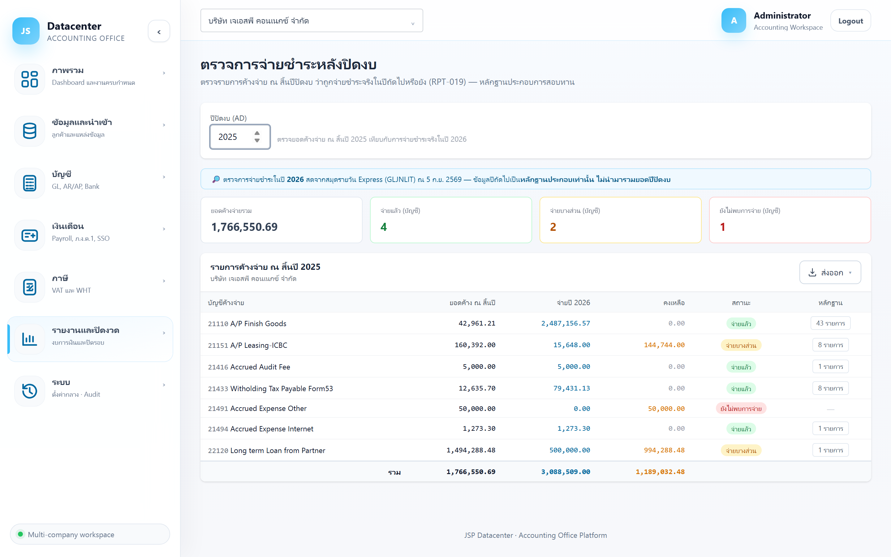

ตรวจการจ่ายชำระหลังปิดงบ
ตรวจว่ารายการ ค้างจ่าย ณ สิ้นปีปิดงบ ถูกจ่ายชำระจริงในปีถัดไปหรือยัง — วิธีสอบทานมาตรฐานที่ผู้สอบบัญชีใช้พิสูจน์ว่าหนี้สินที่ตั้งไว้มีอยู่จริงและครบถ้วน
ถ้าตั้งค้างจ่ายไว้ 50,000 ณ สิ้นปี แล้วต้นปีถัดไปจ่ายจริง 50,000 → ยืนยันว่าหนี้นั้นมีจริง · ถ้าไม่พบการจ่ายเลย → ต้องสงสัยว่าตั้งหนี้เกินจริง หรือยังไม่ถึงกำหนดจ่าย
1. การเข้าใช้งาน
- เลือกบริษัทลูกค้า ที่แถบด้านบน
- เปิดเมนู รายงานและปิดงวด → ตรวจจ่ายหลังปิดงบ
- กรอก ปีปิดงบ (ค.ศ.) — ระบบจะไปดูการจ่ายจริงในปีถัดไปให้เอง
ต่างจากหน้าอื่นที่ใช้ snapshot ตอนนำเข้า — หน้านี้ อ่านสมุดรายวันของ Express สดตอนเปิดหน้า แถบสีฟ้าด้านบนบอกวันเวลาที่ดึงข้อมูล จึงเห็นการจ่ายล่าสุดโดยไม่ต้องนำเข้าใหม่
ข้อมูลปีถัดไป ไม่ถูกนำมารวมยอดของปีปิดงบ และหน้านี้ไม่สร้างรายการปรับปรุงใด ๆ — ใช้เพื่อ สอบทาน ล้วน ๆ ถ้าพบว่าตั้งหนี้ผิดต้องไปแก้ที่รายการปรับปรุงเอง
2. อ่านหน้าจอ

การ์ดสรุป 4 ใบ
| การ์ด | ความหมาย |
|---|---|
| ยอดค้างจ่ายรวม | ยอดค้างจ่ายทั้งหมด ณ สิ้นปีปิดงบ |
| จ่ายแล้ว (บัญชี) | จำนวนบัญชีที่พบการจ่ายครบแล้ว |
| จ่ายบางส่วน (บัญชี) | จำนวนบัญชีที่จ่ายไปแล้วบางส่วน |
| ยังไม่พบการจ่าย (บัญชี) | จำนวนบัญชีที่ยังไม่พบรายการจ่ายเลย |
ตารางรายการค้างจ่าย
| คอลัมน์ | ความหมาย |
|---|---|
| บัญชีค้างจ่าย | บัญชีหนี้สินที่มียอดค้าง ณ สิ้นปี |
| ยอดค้าง ณ สิ้นปี | ยอดที่ตั้งไว้ในงบปีปิดงบ |
| จ่ายปี (ถัดไป) | ยอดที่พบว่าจ่ายจริงในปีถัดไปจากสมุดรายวัน Express |
| คงเหลือ | ส่วนที่ยังไม่พบการจ่าย |
| สถานะ | จ่ายแล้ว · จ่ายบางส่วน · ยังไม่พบการจ่าย |
| หลักฐาน | ปุ่มบอกจำนวนรายการที่พบ — กดเพื่อกางดู วันที่ · เลขที่ · รายละเอียด · จำนวนเงิน |
เป็นเรื่องปกติ — เพราะบัญชีเดียวกันมีทั้งการจ่ายหนี้เก่าและหนี้ที่เกิดใหม่ในปีถัดไปปนกัน สิ่งที่ต้องดูคือ มีการจ่ายพอที่จะครอบคลุมยอดค้างเก่าหรือไม่ แล้วเปิดหลักฐานดูรายการจริง
3. วิธีใช้ตอนปิดงบ
- ทำหลังปิดงบปีนั้นและมีข้อมูลปีถัดไปบ้างแล้ว — ยิ่งผ่านไปหลายเดือน ผลยิ่งชัด
- ดูบัญชีที่สถานะ “ยังไม่พบการจ่าย” ก่อนเสมอ — เป็นจุดที่เสี่ยงตั้งหนี้เกินจริง
- กดดูหลักฐาน ของบัญชีที่จ่ายบางส่วน ว่าที่เหลือคือหนี้ที่ยังไม่ถึงกำหนดจริงหรือไม่
- ส่งออกเป็นไฟล์ เก็บไว้เป็นกระดาษทำการประกอบแฟ้มงบ (ปุ่ม “ส่งออก”)
- ถ้าพบว่าตั้งหนี้ผิด — กลับไปแก้ที่ กระดาษทำการปิดงบ
4. ปัญหาที่พบบ่อย
| อาการ | สาเหตุและวิธีแก้ |
|---|---|
| ทุกบัญชีขึ้น “ยังไม่พบการจ่าย” | ปีถัดไปยังไม่มีข้อมูลใน Express (เพิ่งขึ้นปีใหม่) — รอให้มีการบันทึกจ่ายก่อน |
| ค้างนานแล้วยังไม่พบการจ่าย | ต้องสอบถามลูกค้า — อาจตั้งค้างจ่ายเกินจริง หรือเป็นหนี้ที่ยังไม่ถึงกำหนดชำระ |
| กำลังโหลดนาน | ปกติ — หน้านี้อ่านสมุดรายวันของ Express สดทั้งปี ไม่ได้ใช้ข้อมูลที่นำเข้าไว้ |
| ยอดค้างไม่ตรงกับงบ | ตรวจว่าเลือก “ปีปิดงบ” ถูกปีหรือไม่ และงบปีนั้นรวมรายการปรับปรุงครบแล้ว |
เมื่อสอบทานครบแล้ว ออกงบได้ที่ งบการเงิน (คู่มือกำลังจัดทำ)